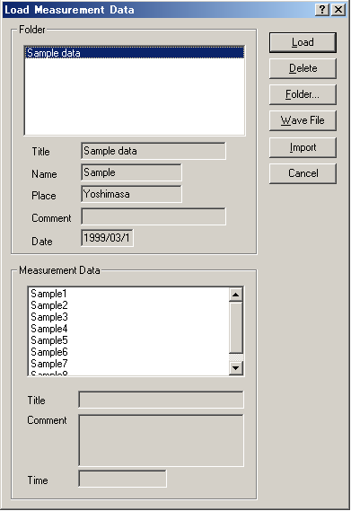
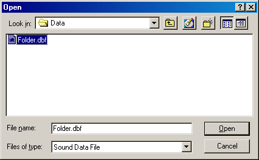

DSSF3 > RA > Impulse response > Measurement guide
Loading measurement data, importing the database
Click the "Load" button to load the impulse response which has been already measured and saved in the database. On the "Load Measurement Data" dialog, select the folder and data from the list, and click the Load button.

*After the installation, only the Sample data is stored in the database.
Also, the WAV file can be loaded by clicking the "Wave File" button.

*In RAD and RAE, only the WAV file with the resolution of 16 bit can be loaded. DSSF3 deals with the WAV file with the resolution of 8, 16, and 32 bit. The sampling rate of the WAV file is used as it is.
On the "Load Measurement Data" dialog, click the "Import" button to load the measurement database. When selecting the folder in which the measurement data is saved, a file "FOLDER.DBF" is displayed. Select this file and click the Open button. By this operation, the previous measurement data is added to the current database. It is useful for comparison of different measurements at a time.

DSSF3 > RA > Impulse response > IMeasurement guide